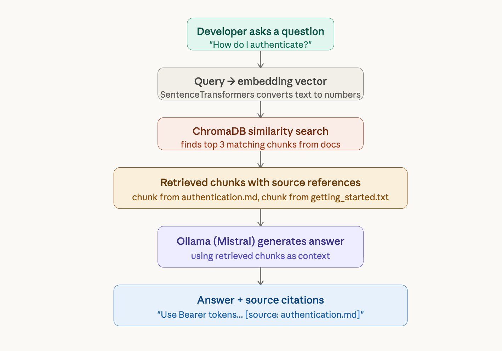
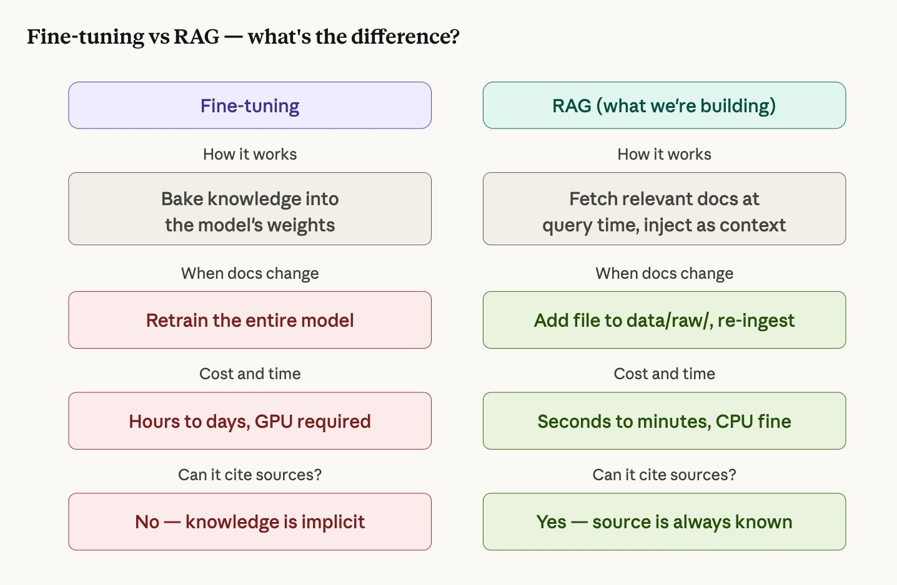
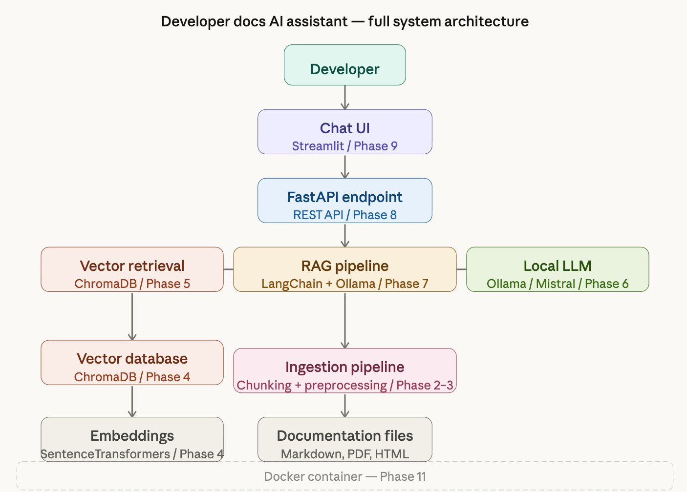
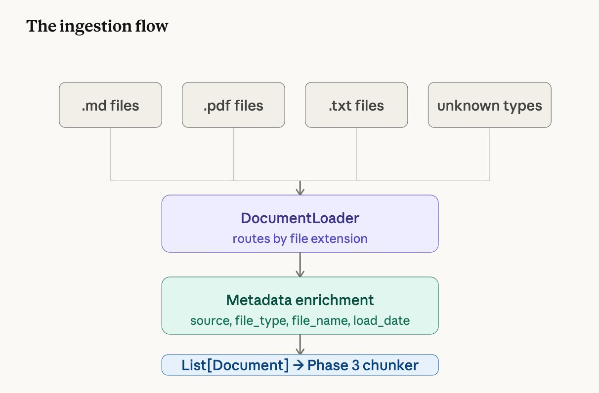
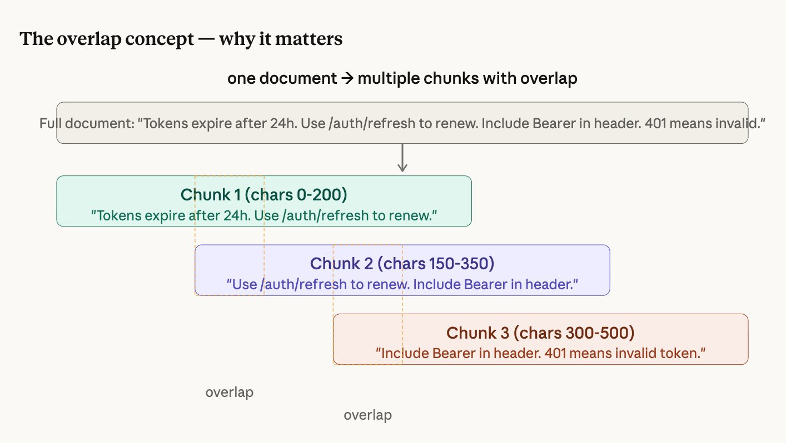
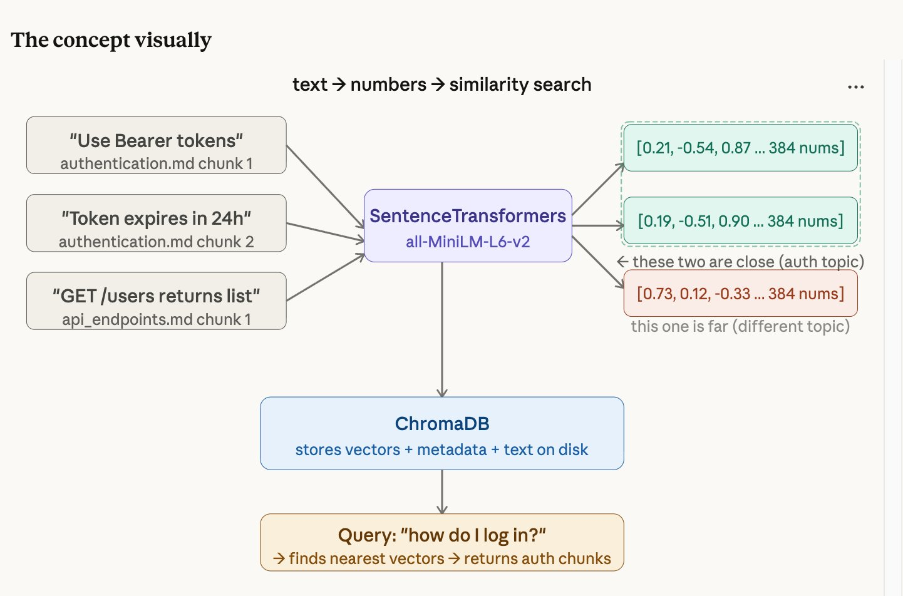
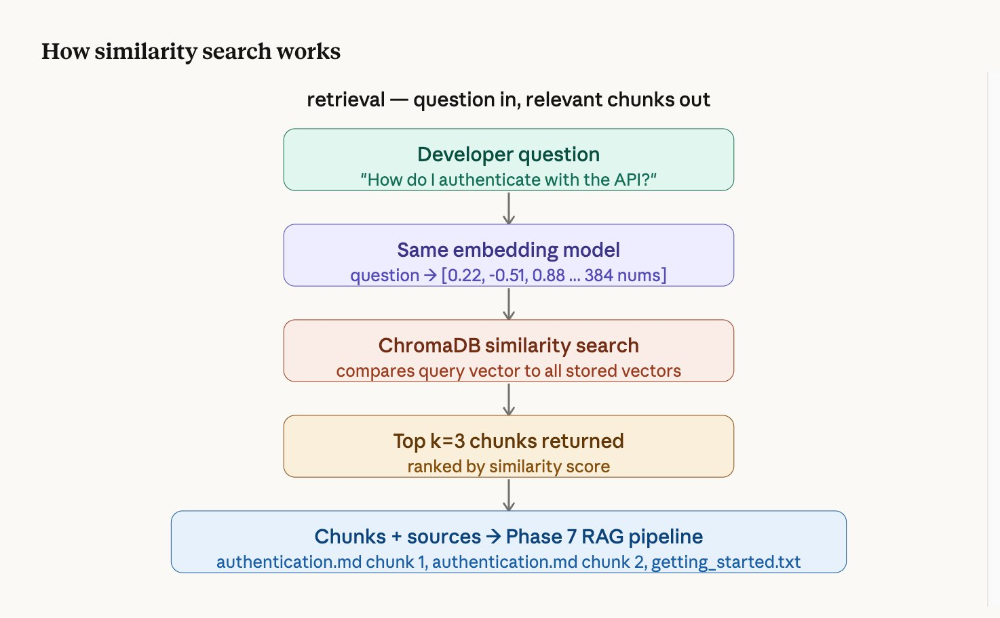
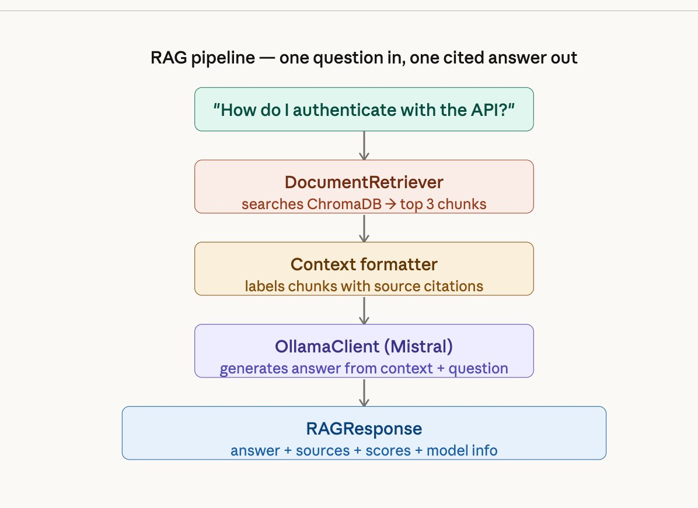
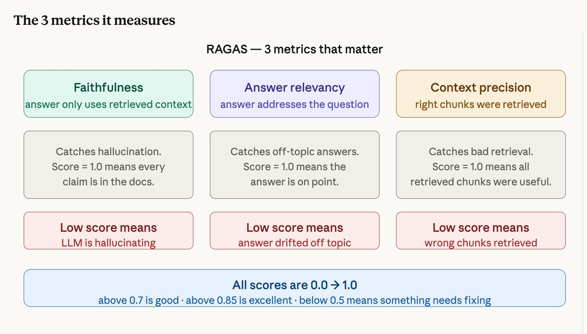

Building a RAG System
from Scratch
A step-by-step walkthrough of how to build a production-quality AI documentation assistant using Retrieval-Augmented Generation, a local language model, and a vector database. Every concept explained as if you've never seen any of this before.
What is RAG?
RAG stands for Retrieval-Augmented Generation. It's a technique where you give an AI model specific documents to read before it answers a question — instead of letting it answer from its general training knowledge.
Think about it this way: if you ask ChatGPT "how do I authenticate with your company's API?", it has no idea — it was never trained on your internal docs. It will either say "I don't know" or make something up (hallucinate).
RAG solves this. When a developer asks a question, the system first searches your documentation for the relevant paragraphs, then feeds those paragraphs to the AI model and says "answer using only this." The model reads the retrieved text and generates a grounded answer — one that comes from your actual documentation, not from its imagination.

Imagine an open-book exam. The student (the AI model) doesn't need to memorize the textbook. Instead, they look up the relevant pages first (retrieval), read them (context), and write their answer based on what they just read (generation). That's RAG.
Why not just fine-tune the model?
Fine-tuning means retraining the AI model on your documentation so it "remembers" the content. This sounds simpler but has serious problems for documentation search:
- Your docs change. Every time you add a new API endpoint or update a guide, you'd need to retrain the model. With RAG, you just drop a file in a folder and re-run ingestion — done in seconds.
- You need citations. When a developer asks "how do I authenticate?", they need to trust the answer. RAG can say "this came from authentication.md, section 3." Fine-tuning can't — the knowledge is dissolved into the model's weights with no traceable source.
- Fine-tuning is expensive. Even a small 7B model requires a GPU, thousands of training examples, and hours of compute. RAG runs on a laptop CPU.

Architecture Overview
The system has two major flows — one for ingesting documents, one for answering questions. Here's the full picture of how every component connects:

Project Setup and Environment
Before writing any logic, make it runnable.
What we did
Created the entire project skeleton — folders, virtual environment, dependencies, configuration, and a basic health check API endpoint that proves the system starts.
Why this matters
A production project isn't just code — it's a system of files that communicate intent. The folder layout you choose on day one determines how maintainable, testable, and deployable your project will be. We established three foundations:
- Python virtual environment (.venv) — isolates this project's dependencies from everything else on your machine.
- pyproject.toml — the modern Python standard for declaring dependencies, project metadata, and tool configuration in one file.
- Modular folder structure — each folder has one responsibility.
src/ingestion/only handles document loading.src/retrieval/only handles vector search.
Key files created
| File | Purpose |
|---|---|
pyproject.toml | All dependencies and project config |
src/config.py | Centralized settings loaded from .env file |
src/api/main.py | FastAPI app with /health endpoint |
.env | Local configuration values (never committed to git) |
tests/test_health.py | 4 tests proving the API starts correctly |
.env file. You change behavior by editing .env, not by touching code. If a required variable is missing, the app fails immediately with a clear error.
Document Ingestion Pipeline
Opening files, reading text, attaching labels.
What we did
Built a DocumentLoader class that opens documentation files from a folder, reads their text content, and wraps each one in a Document object with metadata — a label saying where the text came from.
What is a Document object?
In LangChain, the unit of content is a Document. It has exactly two fields:
Document(
page_content = "Use Bearer tokens for all API requests...",
metadata = {
"source": "data/raw/authentication.md",
"file_name": "authentication.md",
"file_type": "md",
"load_timestamp": "2026-03-18T17:45:59"
}
)
Why metadata matters
Content alone is not enough. Every piece of text needs metadata — where it came from, what format it was, when it was loaded. That metadata is what lets the final system say "this answer comes from authentication.md" rather than returning anonymous text.
Think of a library intake desk. Every book that arrives gets catalogued with its title, author, and category before it goes on the shelf. The catalogue card (metadata) is just as important as the book itself — without it, you can never find the book again.
Supported file types
| Extension | Loader | What it handles |
|---|---|---|
.md | UnstructuredMarkdownLoader | Markdown documentation |
.txt | TextLoader | Plain text files |
.pdf | PyPDFLoader | PDF documents (one Document per page) |
Incremental Ingestion
A naive approach to ingestion would re-process every file every time you run the pipeline — leading to duplicate chunks in the vector store, wasted computation, and polluted search results. This system uses incremental ingestion instead.
Before processing, the pipeline queries ChromaDB's metadata index for all
file_name values already stored. Any file that has been previously
chunked and embedded is skipped automatically. Only new, previously unseen
documents get processed.
Force re-index (
--force) — deletes the entire
vectorstore and re-embeds the full corpus from scratch. Use when the embedding
model changes or the vectorstore is corrupted.Single-file re-index (
--reindex filename) — deletes
all stale chunks for one specific file, then re-chunks and re-embeds it. Use when
a document has been edited and the old vectors are out of date.
# Default — only new files get processed
python -m src.ingestion.run_ingestion
# Force — delete vectorstore, re-embed everything
python -m src.ingestion.run_ingestion --force
# Reindex one file — delete old chunks, re-embed
python -m src.ingestion.run_ingestion --reindex authentication.md
This means scaling the document corpus is a single-step operation — drop the file
into data/raw/ and run python -m src.ingestion.run_ingestion.
The pipeline handles the rest.
Document Chunking
Splitting documents into searchable pieces.
The problem
After Phase 2, each document is one big block of text. If authentication.md is 500 words long and a developer asks "what happens when my token expires?", the system would retrieve the entire 500-word file. That's wasteful and imprecise.
The solution
Chunking splits each document into small, overlapping pieces. Instead of retrieving a whole file, the system retrieves exactly the 2-3 sentences that answer the question.

How RecursiveCharacterTextSplitter works
We use LangChain's smartest text splitter. It doesn't cut at every 512 characters blindly. It tries to find the most natural place to cut, working through this priority list:
- Try to cut at a blank line (paragraph boundary)
- If chunk still too big, try a line break
- If still too big, try a period + space (sentence boundary)
- If still too big, try a space (word boundary)
- Last resort: cut at any character
Settings
chunk_size = 512 characters (how big each piece is)
chunk_overlap = 50 characters (how much consecutive pieces share)Embeddings and Vector Database
Converting text into searchable numbers.
What is an embedding?
An embedding converts text into a list of numbers (a "vector") so that a computer can understand meaning, not just keywords. Each chunk becomes a list of 384 numbers.
The magic: chunks with similar meaning produce similar numbers. So "log in" and "authenticate" end up close together in number-space, even though the words are completely different.

Think of GPS coordinates. "The coffee shop on 5th Avenue" and "the café at 40.758, -73.985" are different descriptions of the same place — but the GPS numbers let you calculate how close they are to other locations. Embeddings do the same thing for meaning instead of geography.
ChromaDB: the vector database
ChromaDB stores all your embedded chunks on disk. For each chunk, it stores three things: the original text, all the metadata (file name, source, chunk index), and the 384 numbers. When you search, ChromaDB compares your question's numbers against every stored chunk's numbers and returns the closest matches.
Retrieval Pipeline
Finding the right chunks for any question.

How it works step by step
- The question is converted to 384 numbers using the same embedding model
- ChromaDB compares those numbers against every stored chunk's numbers
- The 3 chunks whose numbers are closest (most similar meaning) are returned
- Each result comes with a similarity score — higher means more relevant
Example retrieval result
Result 1 — score: 0.611 | authentication.md chunk 0 ← most relevant
Result 2 — score: 0.269 | getting_started.txt chunk 0
Result 3 — score: 0.183 | authentication.md chunk 1LLM Integration with Ollama
Adding the brain that reads and answers.
What is Ollama?
Ollama is a tool that runs large language models locally on your machine. It works like a local server — your code sends it text, and it sends back a response. No internet required after the initial model download. No API keys. Your data never leaves your laptop.
The prompt template
We don't just send the question to Mistral. We send a carefully structured prompt:
You are a helpful developer documentation assistant.
Answer the developer's question using ONLY the information
provided in the context below.
If the answer is not in the context, say "I don't have enough
information in the documentation to answer this question."
Always cite which document your answer comes from.
Context:
{retrieved chunks go here}
Question: {developer's question}
Answer:The instruction "using ONLY the information provided" is what prevents hallucination. Without it, Mistral would blend retrieved context with its training knowledge.
RAG Pipeline
Wiring retrieval + LLM into one call.
What this phase does
Before Phase 7, you had separate pieces — a retriever that finds chunks and an LLM client that generates answers. Phase 7 connects them into a single RAGPipeline class. You give it a question, and it handles everything: retrieve → format context → generate → return answer with sources.

FastAPI Inference Endpoint
Making the pipeline accessible over HTTP.
What is FastAPI?
FastAPI is a Python web framework that turns your Python functions into HTTP endpoints. After this phase, any client — a browser, a mobile app, a curl command, the chat UI — can send a question over HTTP and get a JSON answer back.
The two endpoints
| Endpoint | Method | What it does |
|---|---|---|
/query | POST | Send a question, get an answer with sources as JSON |
/health | GET | Check if all pipeline components are running |
Automatic documentation
FastAPI auto-generates an interactive Swagger UI at /docs. You can open your browser, type a question in the form, click "Execute", and see the full JSON response — without writing any frontend code.
Chat Interface
A real UI developers can actually use.
What we built
A Streamlit chat application that talks to the FastAPI backend. Developers type a question, get an answer with source citation cards showing which document each piece of information came from — with relevance score bars under each citation.
Features
- Dark editorial design with JetBrains Mono and Fraunces typography
- Source citation cards with amber relevance score bars
- Live health status indicator in the sidebar
- Adjustable retrieval setting (1-5 chunks)
- Conversation history preserved during session
- Example question chips that fire immediately when clicked
- Graceful error handling if the API is offline
Evaluation with RAGAS
Measuring quality with actual numbers.
The problem with "it seems to work"
After Phase 9 you can use the system and it feels like it works. But "feels like it works" isn't engineering — it's guessing. RAGAS gives you actual numbers so you can say "my system is 100% faithful to source documents" instead of guessing.

Our scores
| Metric | Score | What it tells us |
|---|---|---|
| Faithfulness | 1.000 | The LLM never hallucinated — every claim comes from retrieved docs |
| Context Precision | 1.000 | The retriever consistently found the correct chunks |
| Answer Relevancy | 0.458 | Affected by timeouts and missing docs (not a quality issue) |
How it works
You create a test set of questions with expected answers. RAGAS runs each question through your pipeline, gets the answer and retrieved chunks, then uses an LLM as a judge to score each metric.
Docker Deployment + Agentic RAG
One-command deployment and an intelligent search agent.
Docker: why containerize?
Right now, running the system requires opening 2-3 terminals, activating a venv, starting Ollama, running uvicorn, running Streamlit. Docker packages everything into containers so the entire system starts with one command: docker-compose up.
The Docker stack
| Container | What it runs |
|---|---|
| ollama | Mistral LLM server |
| api | FastAPI backend with RAG pipeline |
| ui | Streamlit chat interface |
| ingestion | One-time document processing job |
Agentic RAG: what changed?
The naive pipeline (Phases 1-9) follows a fixed path: always retrieve 3 chunks, always generate once. The agentic pipeline adds a reasoning layer — the LLM decides what to search for, can search multiple times, and determines when it has enough information to answer.
PIPELINE_MODE=naive — fast, predictable, ~5 secondsPIPELINE_MODE=agentic — smarter, slower, ~15 secondsBoth share the same API, same UI, same tests.
Naive RAG vs Agentic RAG
Understanding the two approaches this project implements.
| Type | How it works | Best for |
|---|---|---|
| Naive RAG | Fixed pipeline: embed → search → generate. No decisions. | Simple questions on well-structured docs |
| Advanced RAG | Adds re-ranking, query rewriting, hybrid search. Still fixed. | Better retrieval without agent complexity |
| Agentic RAG | LLM decides what to search, when, and how many times. | Complex questions requiring multi-step reasoning |
What LangChain Actually Does
Understanding the toolkit that connects everything.
LangChain is a toolkit, not a model
LangChain doesn't generate text. It doesn't search databases. It's the glue that connects the pieces that do those things. Think of it like LEGO — it gives you pre-built blocks for loading documents, splitting text, generating embeddings, searching a database, and talking to an LLM.
The packages we used
| Package | What it provides | Used in |
|---|---|---|
langchain-core | Document class, PromptTemplate | Every phase |
langchain-community | File loaders (Markdown, PDF, text) | Phase 2 |
langchain-text-splitters | RecursiveCharacterTextSplitter | Phase 3 |
langchain-chroma | ChromaDB integration | Phase 4 |
langchain-huggingface | SentenceTransformers wrapper | Phase 4 |
langchain-ollama | Ollama LLM and ChatOllama | Phases 6, 11 |
langgraph | ReAct agent framework | Phase 11 |
What tests are for
Each test encodes one thing that must always be true. Collectively they form a specification of the system's behavior — not just "it works today" but "it works this specific way, always." Before every commit, you run 63 tests in under 30 seconds. Green means every contract still holds.
Built as part of the Developer Documentation AI Assistant project.
github.com/sumreen7/developer-knowledge-rag